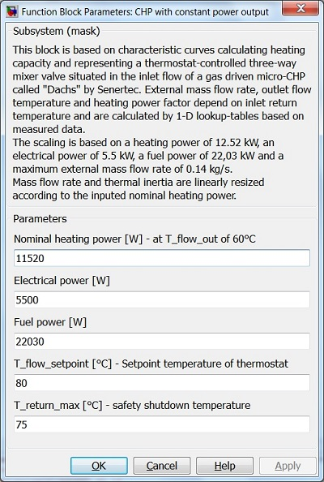

CHP with constant power output
Path: CARNOT/???????
Purpose
This block calculates mass flow rate and outlet flow temperature depending on
inlet return temperature and inputed nominal heating power of a gas driven micro-CHP with constant power.
Description
This block is based on characteristic curves calculating heating capacity
and representing a thermostat-controlled three-way mixer valve situated
in the inlet flow of a gas driven micro-CHP called "Dachs" by Senertec.
External mass flow rate, outlet flow temperature and heating power factor
depend on inlet return temperature and are calculated by 1-D lookup-tables
based on measured data.
The scaling is based on
Inputs:
Outputs:
Parameters and Dialog Box

Characteristics
Direct Feedthrough Yes
Sample time Inherited from driving block
Vectorized No